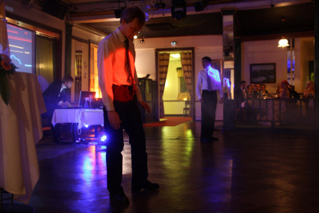

Our sonification system is based on measuring biosignals with Bluetooth biosignal sensors. We currently use the Zephyr BioHarness measurement belt, which provides continuous information on heart rate, respiration and 3-D acceleration. The biosignals are routed to a digital audio synthesis environment, where the music is generated. We use Ableton Live for live performances and a more compact synthesis environment in permanent installations. The source codes of the Zephyr Bluetooth protocol are available at GitHub: zephyr-bt.
 Live at Ravintola Kaisaniemi, Oct 10, 2012.
Producing expressive and entertaining music based on biosignal measurement is an interesting research topic. We have so far published one paper (Paalasmaa et al. 2012) on our technology, at the 11th International Symposium on Intelligent Data Analysis in October 2012.
Paalasmaa, J., Murphy, D. J. & Holmqvist, O., 2012. Analysis of Noisy Biosignals for Musical Performance. 11th International Symposium on Intelligent Data Analysis (IDA 2012). Lecture Notes in Computer Science 7619. pp. 241-252. Springer, Heidelberg. download PDF – doi: 10.1007/978-3-642-34156-4_23
{% include footer.html %}